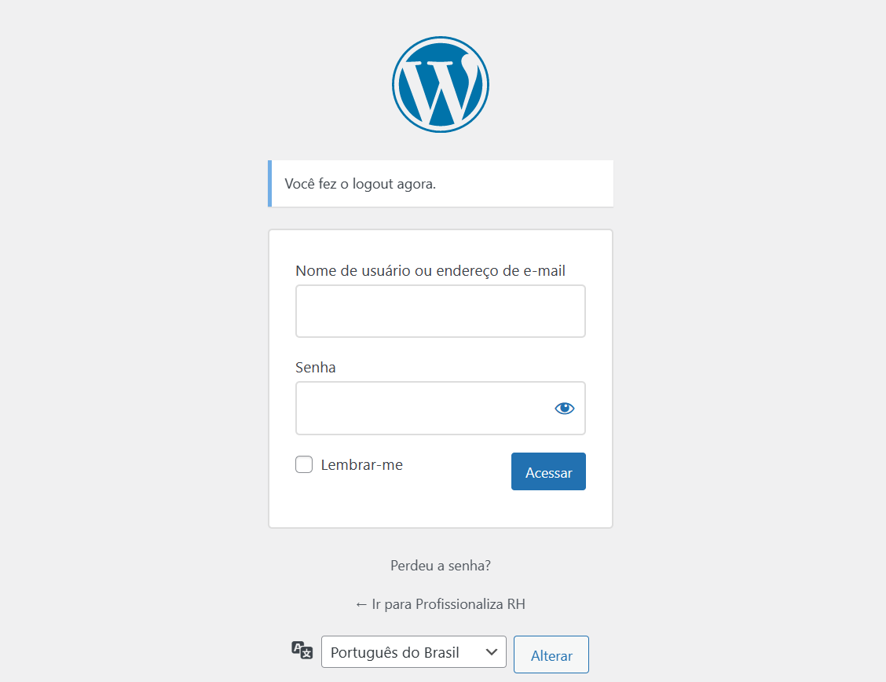
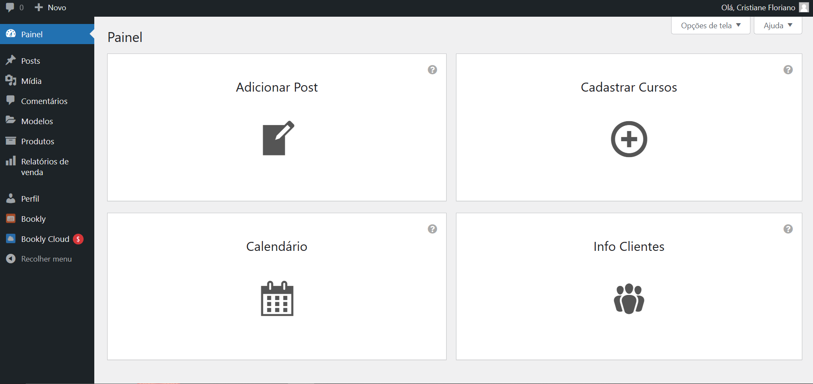
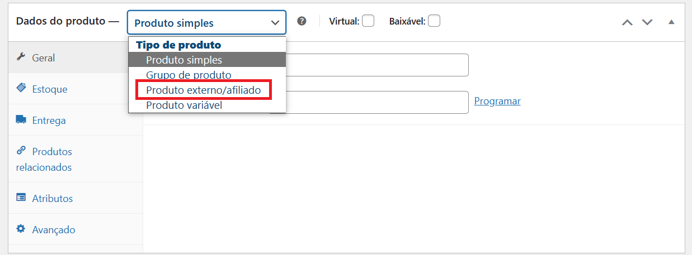
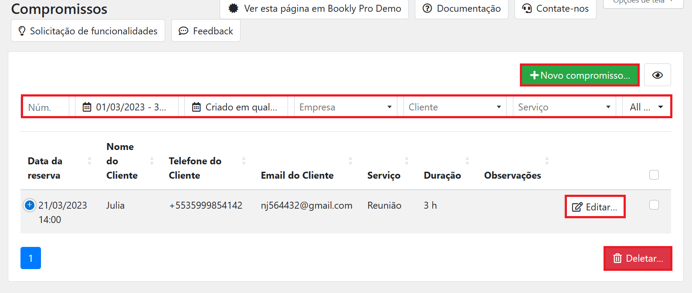
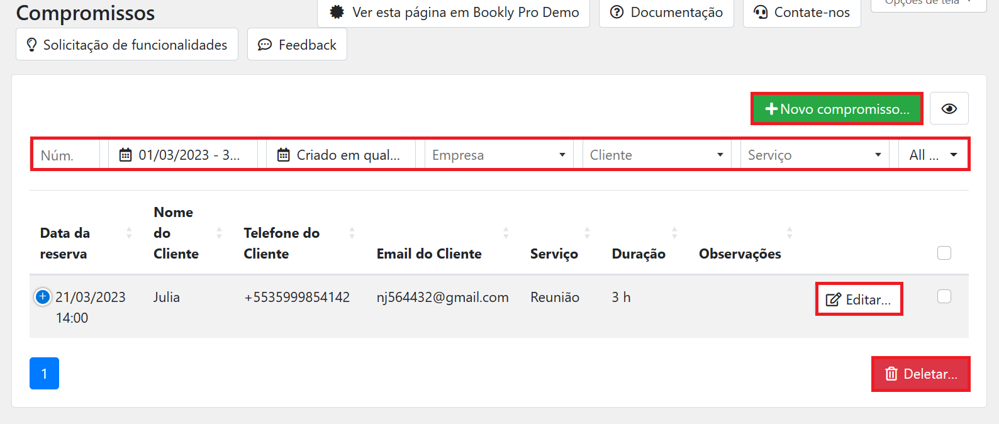
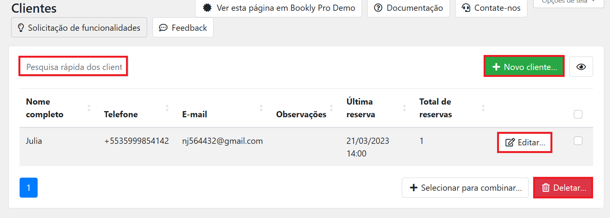
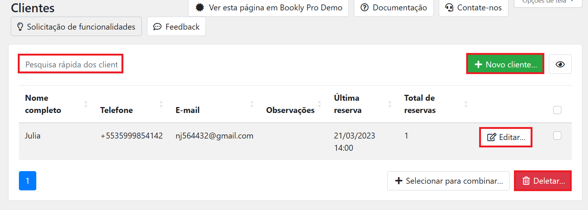
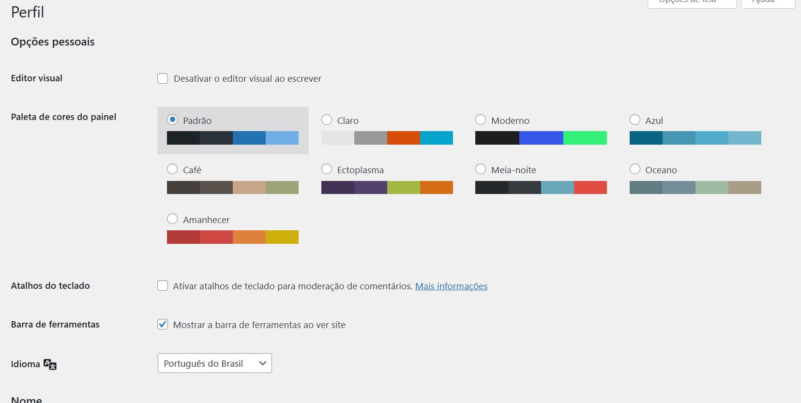
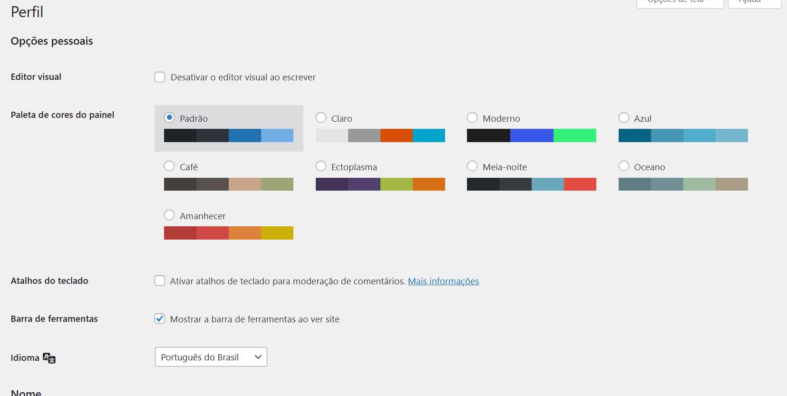

Primeiro digite o seu domminio: seu dominio/wp-admin. Exemplo:

Desconsidere o Localhost
Logo após isso sera exibido essa tela em seu navegador:
Preencha os campos com o nome de usuario e senha que lhe sera informada.
Este será seu painel administrativo:
Na barra lateral a esquerda de seu painel passe o mouse pela opção post e clique em Adicionar Novo.

Ao selecionar uma imagem você ira ter algumas opções:

Na barra lateral no painel va para


Nessa tela tera algumas opções:
Nesta tela voce podera adicionar o nome da nova categoria no campo Slug copie o nome que voce digitou todo minusculo.A descrição não é necessaria. Depois clique em adicionar nova categoria


As tags funcionam semelhantemente com as categorias.
Nessa area será salva todas as imagens do site.Nela é possivel pesquisar determinada imagem, adicionar novas imagens,deletar imagens caso necessario.
Para adicionar uma imagem arraste e solte a imagem no campo ou clique na opção Selecionar arquivos.
Quando ouver comentarios em algum de seus posts eles apareceram aqui.Aqui tem como voce gerenciar todos os comentarios feitos: Aprovar comentarios,Envialo para spam ou Excluilo.

cadastrar um produto funciona de forma semelhante a publicação de posts.

Em geral clique em Produtos simples aparecerá algumas opções e selecione Produto Externo/Afiliado
Abrirá alguns campos que voce deve preencher:

Escreva uma breve descrição sobre o curso.Ele será exibido na barra de pré vizualização do curso.

Este campo funciona igualmente a area de inserir posts

Este campo funciona igualmente a area de Categorias dos posts.
Esta area executa as mesmas funções de Gerenciar Posts porem voltada para os cursos cadastrados. Ignore os botões que estao perto do botão Adicionar novo.
Este é o seu calendario de compromissos agendados. Nas setas a esquerda voce pode navegar entre os meses. No campo a direita voce pode escolher vizualizar seus compromissos: mensalmente,semanalmente e diariamente ou em formato de lista.
O dia atual estará destacado no calendario. Para vizualizar melhor as informações de cada compromisso passe o mouse por cima do horario agendado.´

Clique no pop-up exibido para abrir uma tela com mais informações sobre o compromisso.

Aqui voce pode visualizar as informações do cliente.Clique no simbolo de ✅ para aprovar o agendamento.Não esqueca de selecionar o campo de enviar notificações para o cliemte ser notificado da confirmação do agendamento.E ao clicar em guardda voce ira salvar todas as alterações.
 

Aqui voce pode vizualizar melhor todas as informações dos agendamentos.Caso necessario editar,deletar e adicionar novo compromisso.
 

Aqui voce consegue vizualizar os dados pessoais dos clientes,podera pesquisar determinado cliente,adicionar novo,editar e deletar informações.
 

Nessa tela sera possivel editar todo o seu perfil desde as cores que serão exibidas no painel até o endereço,definir nova senha,etc...